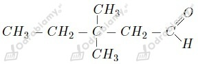

a)
b)
c)
d)

a) 1-chloro-2,2-dimetylopropan
b) 2,3-dimetylobutan-2-ol
c) heksan-2-on
d) 2-metylopropanal
Fluorowcopochodne:
Alkohole:
Aldehydy:
Ketony:
Izomery konstytucyjne:
Zdaniami prawdziwymi są: c , d, e .
wyjaśnienie zdań fałszywych:
a. Chlorometan ma większą lotność od jodometanu ze względu na niższą temperaturę wrzenia oraz niższą masę cząsteczkową.
b. Alkoholem o najmniejszej masie cząsteczkowej jest metanol.
Zaczynamy od obliczenia masy przedstawionego pojedynczego meru:
Wiemy, że dany polimer składa się z 250 merów. Liczymy jego masę cząsteczkową:
Odpowiedź: Masa cząsteczkowa tego polimeru wynosi 21500 u.
Masy atomowe poszczególnych pierwiastków w cząsteczce mentolu to:
Liczymy wartości indeksów we wzorze mentolu:
Odpowiedź: Wzór rzeczywisty mentolu to
Zaczynamy od obliczenia masy powstałego etanolu:
Zapisujemy równanie reakcji fermentacji alkoholowej:
Widzimy, że z jednej cząsteczki glukozy powstają dwie cząsteczki etanolu. Masa cząsteczkowa glukozy to 180 u, zaś masa cząsteczkowa etanolu to 46 u.
Odpowiedź: Fermentacji uległo 153,6 g glukozy.
Wzór grupowy propan-1-olu:
Wzór grupowy propanalu:
Wzór grupowy propan-2-onu:
Każdy z tych związków zawiera w cząsteczce po jednym atomie tlenu. Masa atomowa tlenu to 16 u. Liczymy zawartość procentową tlenu w poszczególnych związkach:
- propan-1-ol:
- propanal:
- propan-2-on:
Odpowiedź: Najmniejszą zawartość procentową (procent masowy) tlenu w cząsteczce ma propan-1-ol.